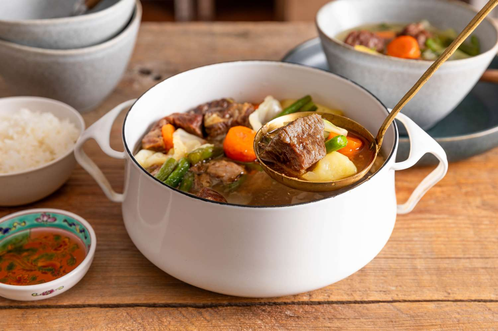

Nilagang baka, or beef nilaga, is a Filipino stew of tender beef cubes simmered in a clear broth with potatoes, carrots, and leafy greens. The savory flavors come from the richness of the meat, garlic, onions, and a dash of patis (fish sauce).
Nilaga is the Tagalog term for ‘boiled’, a cooking method of simmering meats, fish, or vegetables in water or clear broth. Cooking can be done in a deep stockpot over a simmering low fire or on the stovetop for a couple of hours (as in this recipe).
Nilagang baka has hints of saltiness thanks to the tablespoons of patis (fish sauce) added to the broth. According to food historian Doreen G. Fernandez, this kind of saltiness is a Filipino taste preference because our food is eaten against the bland background of rice. Rice is typically steamed plain, making it a good backdrop for salty sauces.